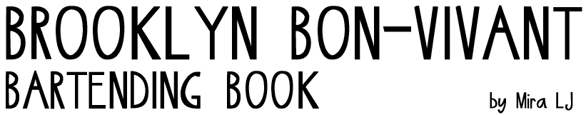

if you want to, you can download my resume
or you can watch this video of a concert
or maybe you're looking for cocktail recipes from the
or you could netflix a documentary I worked on like
Photographic Memory by Ross McElwee
Photographic Memory by Ross McElwee
and you can see my photo series on OPTIMISM
as well as Miranda the Panda, my first grade documentary
or just send me an email at miralj@gmail.com